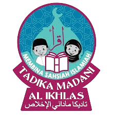
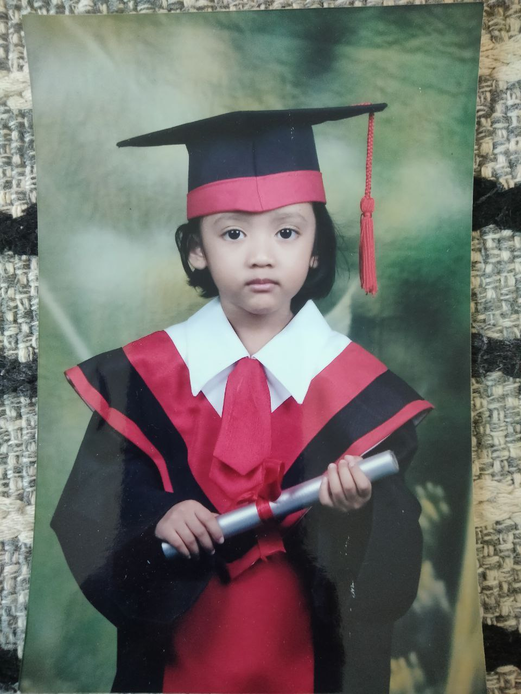
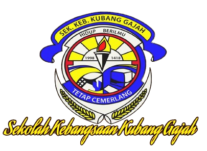
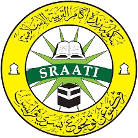
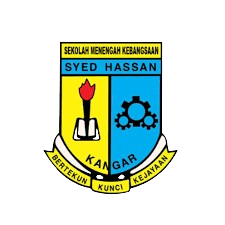
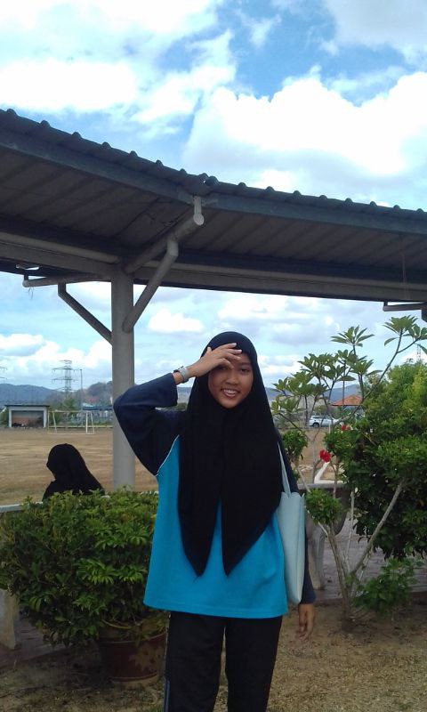
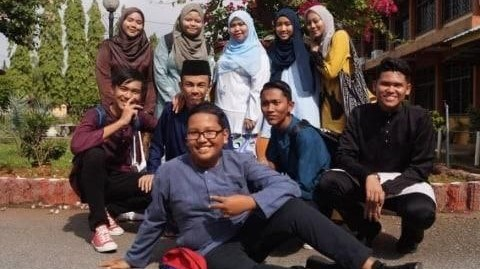
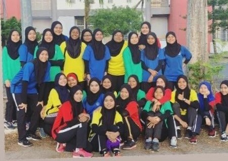
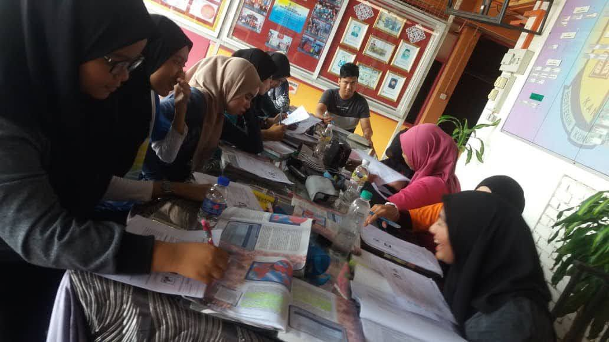
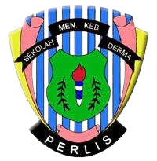

When we moved to Perlis, my mother couldn’t take care of us, so she left us to someone who provided to take care of the kids. At that time I was 5 years old I think. She tried to send me to kindergarten but it seems I’m the problem because I have speech delay so it is hard for people to communicate with me. But in the end, I still got to graduate from this kindergarten.
This kindergarten is where most of my cousins and my family learn spelling, counting numbers, and Islamic things such as prayer and Alif. Ba. Ta. So here I am finishing kindergarten at Tadika Madani at 6 years old. But I still couldn’t speak and spell at that time.

Because I had a weakness which was speech delay (I couldn’t talk) I lacked social interactions. I didn’t know how to communicate with other kids or start a conversation, and because of this, those kids bullied me in kindergarten. But I managed to endure it till the end.

Sekolah Rendah Kubang Gajah was my first primary school. I studied there from I was 7 years old until 8 years old. I don’t have a picture of me when I was at primary school so I will just share the logo of my school. I was detected with speech delay and slow learning here. They talked to my parents and my parents kept sending me to the smart reader so I could be like other kids and I also got into a special class for a certain subject.
However I can’t speak Malay properly, that doesn’t mean my language is English, my language actually is alien language. So because of this, I lack social skills with my peers. I had always been alone whenever lunch breaks or walked to any class. Maybe because I couldn't speak and not clever like them, I was easily bullied. I’m not only being bullied by my classmates but also by the seniors. But it’s okay because my parents noticed that something was wrong with me and I got a burst on my body. So my parents took action against the school. But it didn’t stop them from being bullied. So I decide to change schools at my age 9 years old.

At 9 years old, I started going to a private Islamic school that being called SRAATI, when I started school I seriously missed a lot of things in studied especially in reading the Al-Quran. All my peers are already Khatam Al-Quran while me still in Muqadam. At first, all the teachers just ignored me because I’m a slow learner, no one wanted to teach or focus on me properly like in my past school. But I don’t really care about it, I just don’t like studies when I am being treated like that.
But one day, I got a friend, she was really nice to me, she knew that I had a weakness but she still being friends with me. She teaches me from the start, how to spell, pronounce, count, and all. She was patient in answering all my questions. Until the library at that school opened, my friends started to teach me how to read a book and enjoy it. Since that, I really loved in studies, and I started to explore my subjects, especially mathematics.
At 12 years old, I finally found a teacher who was willing to teach me in lovely ways. She never gave up teaching me English and Mathematics until I learned the basics of those subjects, so I managed to take the UPSR examinations and got such unbelievable results as 3B and 2C. B is subject Saince, English, and Bahasa Malaysia II. I’m so grateful for that result, this is because I learned spelling at the age of 11 years old and I started to understand those subjects at the age of 12 years old.
Here i will end of my kid education journey. So lets we all see highschool times.
My high school story is such a long story here I learned a lot of things, but don’t worry I will make it short.

When I was 13, my mom sent me to Sports School, but it doesn’t mean I’m talented in any sport. I was sent there because I was an exclusive student (OKU student) so the exclusive student is in a separate building from Perdana students. I once studied there for a month but the teachers there saw that I could follow the Perdana subject, so they decided to let me go study with Perdana students.

At that school, there are two classes: the class with sports students and the class with music students. The teacher decided to send me to a music class but I want to join a sports class and the teacher said a sports class for naughty students. So I ended up studying in music class until I finished the PT3.

After PT3, everyone will separate and combine classes with sports students following the PT3 result. I once entered the Science Stream, but it doesn’t mean my results are great, i was just lucky that I got into my dream course but it didn’t last long. I changed my course to ‘Sains Rumah Tangga’ because my mom wants me to be a fashion designer. So I decided to give up on my dream.
“Everything that we feel that things are bad, there must be a reason”. I believe this word because I never imagined how I be so happy and enjoy my high school life like that, it was such a good memory that never die and I will always cherish that moment.

In my high school moment, all my teachers supported me, taught me patiently, and guided me until I understood. It was a good thing, it made me love studying, and it motivated me to get the best result because all my teachers gave high hopes for me.

And yeah, I scored the SPM even though I had to give up because of PKP for my batch, but I got such a great result. My SPM result is 2 A-, 6B+, and 1 C. I got science and history for A- and 1 C for English, sorry I'm really bad at English and the other is B+. I became a sample student tu every bad school to get them motivation because I'm from exclusive student who can read at 11 years old but I never gave up on getting where I am.
But it's not the end, I'm still in high school until I'm 20 years old, because I'm continuing STPM. But I change the school because I want to learn art. At my old school, there was no art course for STPM. I change to SMK Derma.

The STPM era was my dark time. I was really struggling with studying and losing my friends, my mental health at that time was unhealthy because of the syllabus subject, teacher, and my classmates, everything was a bad memory for me. Until I decided to study alone at the library and went to school just to take an exam. But I managed to endure it again, and the result was pretty great for someone who struggled alone. My final result for STPM is pointer 2.67.
Okay, I'll stop here for my education things, I learned a lot of things at the education moment, feel disappointed, regretful, lost motivation, happy, depressed, and more. From that things that I learn make me become such a strong person. Thanks to all the people that I have known.